Il n'y a rien à installer au sens habituel : l'application vit sur une page web. Elle s'ouvre dans n'importe quel navigateur récent, sur ordinateur comme sur téléphone, à cette adresse :
https://niamort36-prog.github.io/TableauSuiviPrepa/
Aucun compte, aucun mot de passe. Les données sont partagées en temps réel entre tous ceux qui ouvrent l'adresse : ce qu'une personne enregistre apparaît chez les autres.
Plutôt que de retaper l'adresse, ajoutez un raccourci :
| Appareil | Comment faire |
|---|---|
| Ordinateur Chrome ou Edge |
Menu ⋮ en haut à droite, puis Enregistrer et partager →
Créer un raccourci. Cochez Ouvrir dans une fenêtre pour que
l'application s'ouvre sans barre d'adresse. |
| Android Chrome |
Menu ⋮, puis Ajouter à l'écran d'accueil. |
| iPhone / iPad Safari |
Bouton Partager (le carré avec une flèche), puis Sur l'écran d'accueil. |
Ctrl + F5 sur ordinateur. Si cela ne suffit pas, ajoutez
?v=2 à la fin de l'adresse : le navigateur la considère comme nouvelle
et ne peut plus servir sa copie en cache.
L'accueil liste les chantiers en cours de l'équipe affichée, du plus proche au plus lointain. Chaque carte se lit d'un coup d'œil.
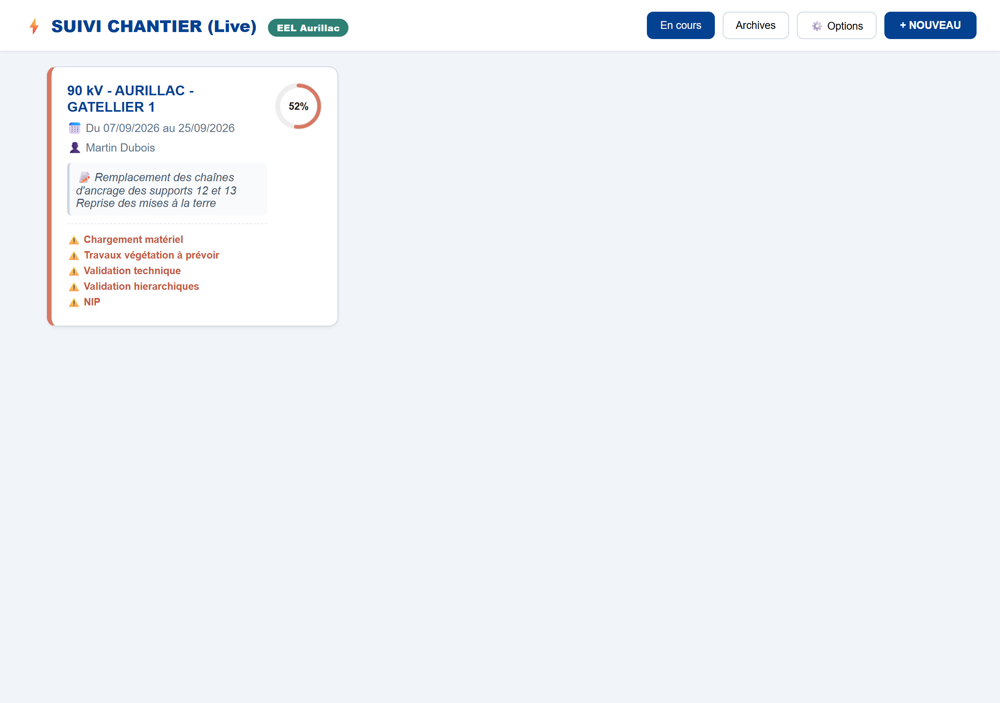
| Élément | Ce qu'il indique |
|---|---|
| Bordure verte | Aucune date butoir dépassée ni proche. |
| Bordure jaune | Une échéance approche. |
| Bordure rouge | Au moins une date butoir est dépassée. |
| Jauge | Part des tâches renseignées, sur les 25 tâches du suivi. |
| Liste d'alertes | Les tâches en retard (⚠️) ou proches de l'échéance (🕒). |
| 🚗 Déplacement | Le chantier nécessite un déplacement. |
Un clic sur une carte ouvre le chantier. Le bouton + NOUVEAU en crée un dans l'équipe affichée.
La fiche rassemble l'identité du chantier : la ligne concernée, les personnes, les dates, les numéros d'ordre et la description des travaux.
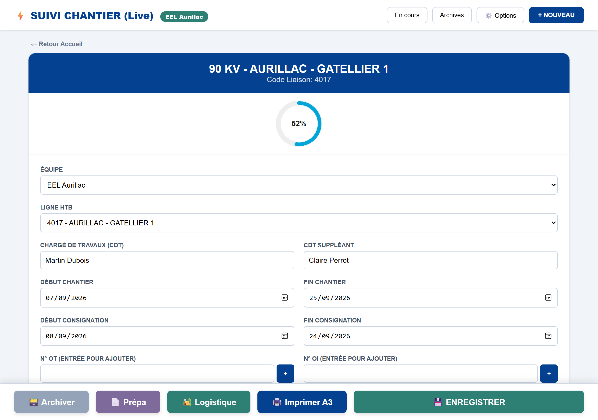
L'enregistrement vous laisse où vous êtes : sur la fiche si vous y travailliez, sur la préparation si vous y étiez. Un bandeau vert passe pour confirmer, puis s'efface — plus de retour à l'accueil, ni de fenêtre à fermer, au milieu d'une saisie. Seul archiver vous emmène ailleurs, aux archives.
Sous la fiche, les 17 tâches du suivi sont réparties en cinq familles. Chacune a un délai propre, compté en arrière depuis la date de début du chantier. Une tâche à 90 jours doit donc être faite trois mois avant le démarrage.
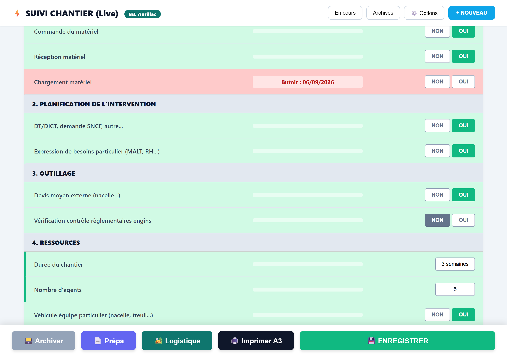
| Couleur | Signification |
|---|---|
| Vert | Traitée : vous avez répondu OUI ou NON. |
| Jaune | L'échéance approche — un mois avant pour les tâches à 30 jours ou plus, cinq jours avant pour les autres. |
| Rouge | La date butoir est passée et la tâche n'est pas traitée. |
| Blanc | Pas encore d'échéance, ou tâche sans délai. |
Les deux lignes Durée du chantier et Nombre d'agents attendent une saisie libre, pas une réponse OUI/NON. Elles comptent dans la jauge dès qu'elles sont remplies.
Le bouton 📄 Prépa ouvre la liste des documents à produire : NIP, constat d'adéquation, mode opératoire, calculs, PPE, MALT/CC, listes de matériel et d'outillage.
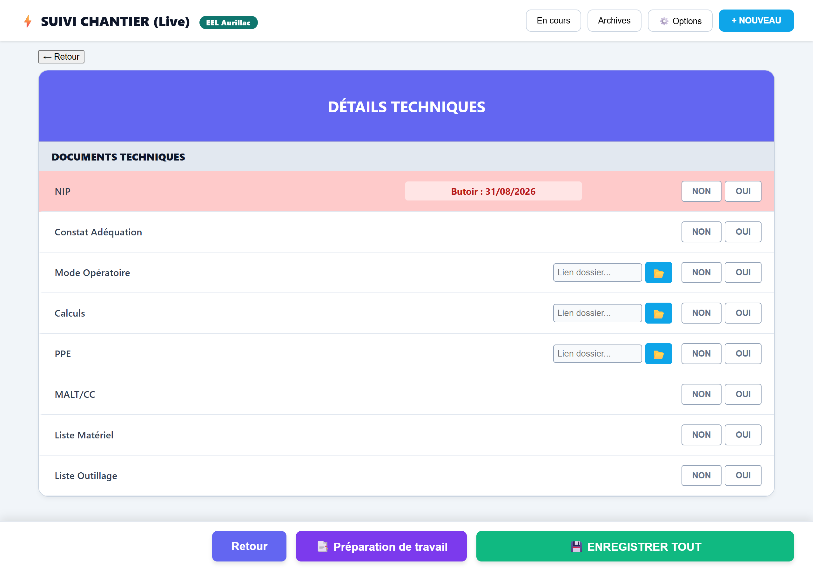
Trois documents acceptent un lien de dossier : mode opératoire, calculs et PPE. Collez-y un chemin réseau ou une adresse, le bouton 📂 l'ouvre.
K:\Dossiers\... ne peut pas être ouvert depuis une
page web : les navigateurs l'interdisent pour des raisons de sécurité. Le champ reste
utile pour noter l'emplacement, mais il faudra le copier à la main dans
l'explorateur.
Le bouton 🏕️ Logistique ouvre un espace à huit onglets qui rassemble tout ce qui entoure le chantier. Son en-tête rappelle la ligne et le numéro d'OI saisi sur la fiche, pour qu'on sache toujours de quel ordre il s'agit. Aucune de ces informations n'entre dans le calcul d'avancement : la jauge ne bouge pas quand vous les remplissez.
C'est aussi cet espace, et lui seul, que voient les personnes à qui vous transmettez le lien de partage.
Qui dort où, combien de nuits, qui a payé — et la répartition calculée toute seule. Deux listes : autant de gîtes et autant de dépenses communes que nécessaire, chacun avec son intitulé.
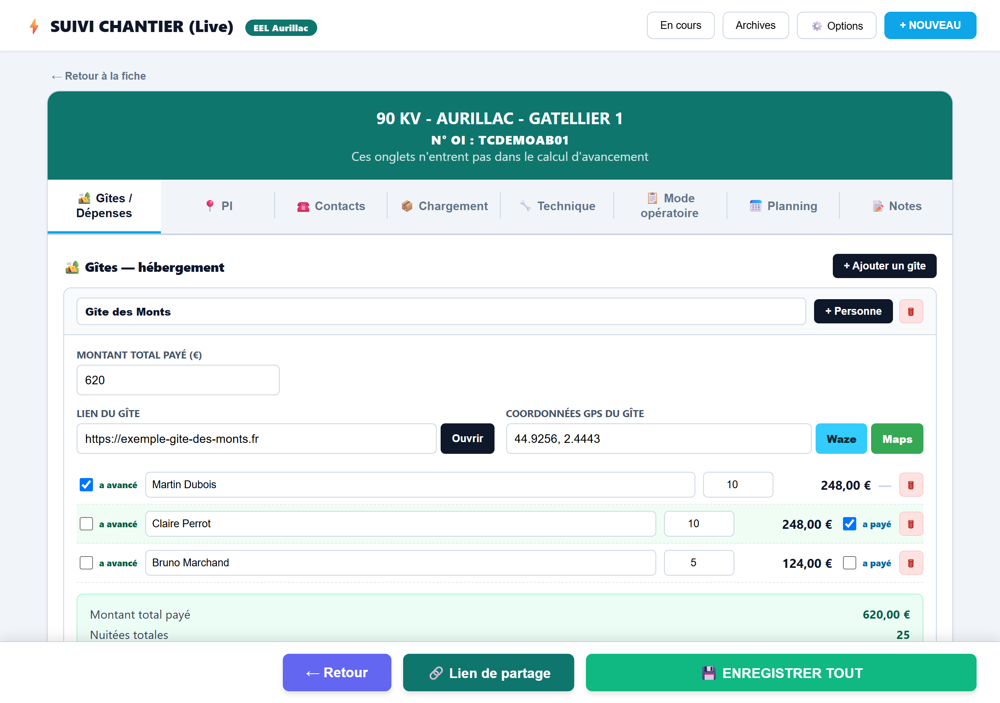
Les lieux utiles : rassemblement, accès, base travaux. Chaque point s'ouvre d'un clic dans Waze ou dans Google Maps.
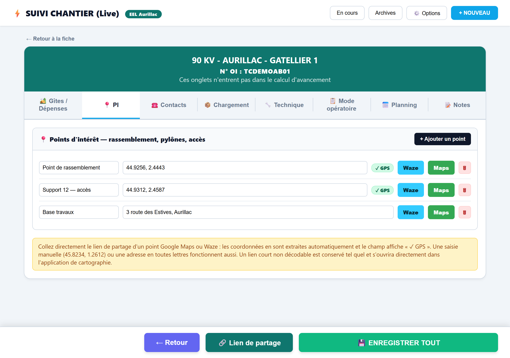
Le plus simple est de coller un lien de partage depuis Google Maps ou Waze :
les coordonnées en sont extraites automatiquement. Une saisie manuelle
(45.8234, 1.2612) fonctionne aussi, virgule décimale française comprise, tout
comme une adresse en toutes lettres.
maps.app.goo.gl ne peut pas être décodé par la page.
Il est alors conservé tel quel et s'ouvrira directement dans l'application de
cartographie : le résultat est le même pour vous.
Les numéros utiles, rangés dans les catégories que vous créez : RTE, sous-traitants, secours, ce que vous voulez.
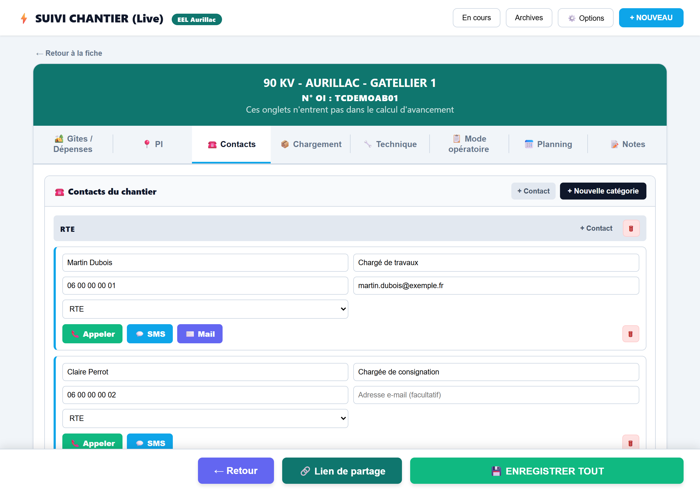
Le bouton Mail n'apparaît que si une adresse valide est renseignée. Sans numéro, Appeler et SMS restent visibles mais inactifs. Supprimer une catégorie ne supprime pas ses contacts : ils passent dans Sans catégorie.
Cet onglet fait le lien avec Invent'RTE, l'application d'inventaire, et donne accès aux paniers de chargement du chantier.
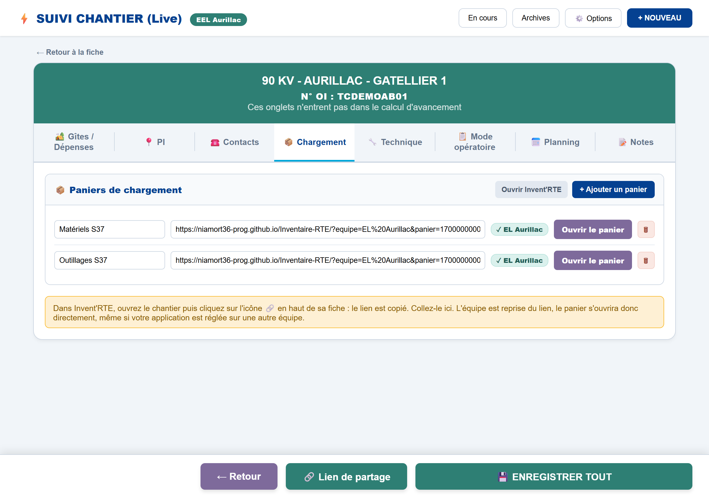
Pour rattacher un panier :
Le lien porte l'équipe : si votre Invent'RTE est réglé sur une autre équipe que celle du panier, il bascule tout seul. Un badge confirme l'équipe reconnue, ou signale un lien inexploitable.
Les efforts et les solutions de terre, pylône par pylône et portée par portée.
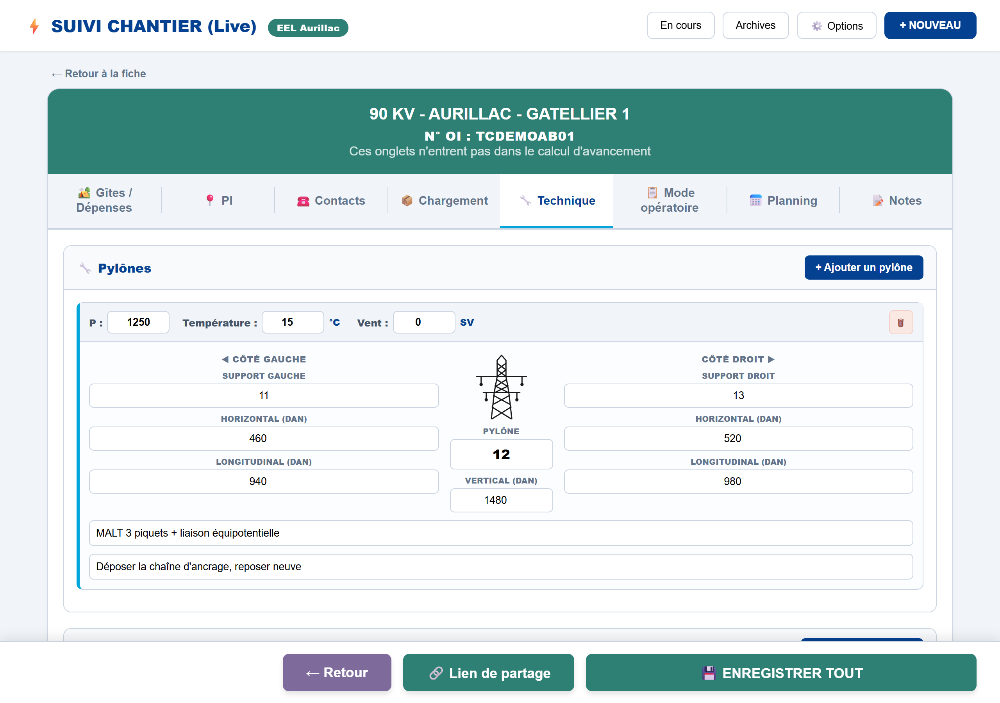
Chaque fiche se lit comme un schéma, et la représentation change selon la nature de l'ouvrage.
Un pylône est dessiné au centre, avec son effort vertical, encadré de ses voisins de gauche et de droite et de leurs efforts horizontaux et longitudinaux.
Une portée est dessinée par son câble : le pylône de gauche et celui de droite portent chacun leur numéro, et le seul effort demandé est Th (ou To), sous la chaînette.
Dans les deux cas, le bandeau du haut donne les paramètres — P, la température en degrés, et le vent en pascals, qui affiche SV dès que la valeur est nulle — et le bas de la fiche reçoit la solution de terre et un commentaire.
Le déroulé des opérations, en tâches et sous-tâches. Chaque fiche se replie sur son titre, sa période et ses intervenants.
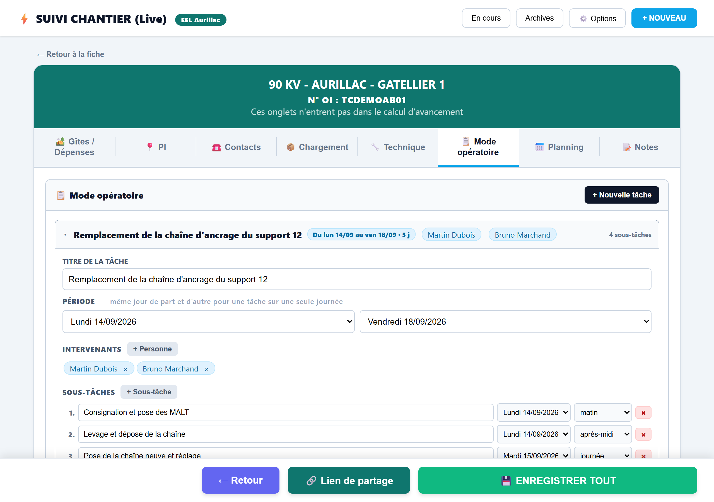
Une tâche couvre une période : du jour X au jour Y. Elle peut donc durer une journée comme plusieurs semaines. Choisir le même jour de part et d'autre donne une tâche d'une seule journée.
Ses sous-tâches se rattachent au plus fin : une journée, voire une demi-journée. C'est là que se joue le détail du déroulé.
Une vue par semaine, découpée en matin et après-midi, comme un agenda.
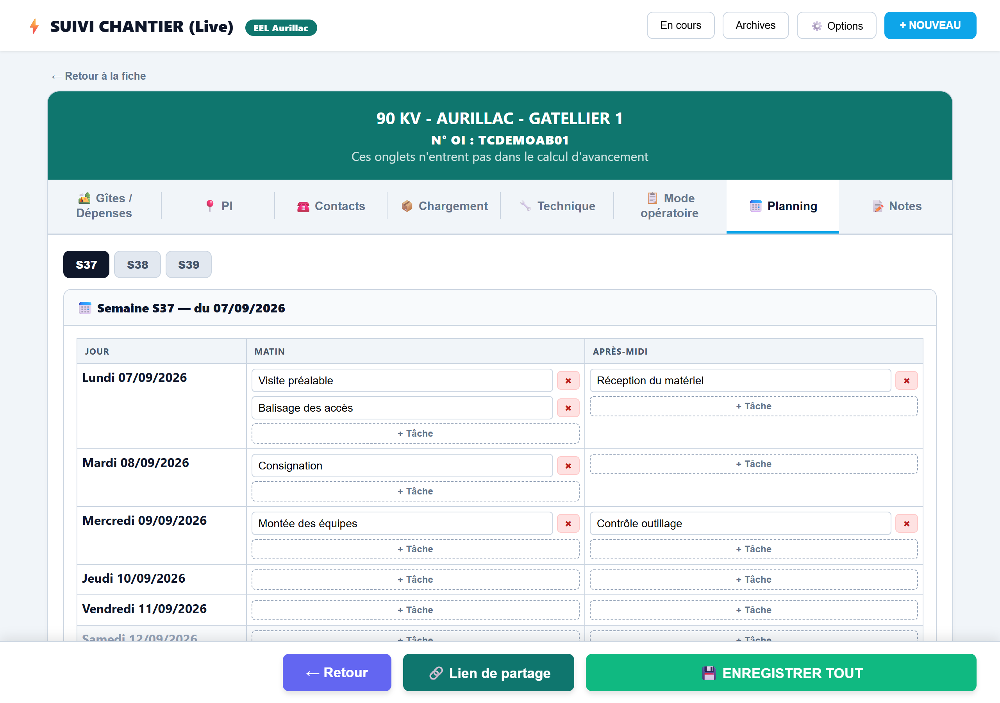
Les onglets de semaine — S37, S38, S39… — sont calculés à partir des dates du chantier. Si aucune semaine n'apparaît, c'est que les dates de début et de fin ne sont pas renseignées sur la fiche.
Chaque demi-journée accepte autant de tâches que nécessaire. Les week-ends sont grisés, les jours hors période atténués.
Un fil de notes partagé, où chacun signe de son nom.
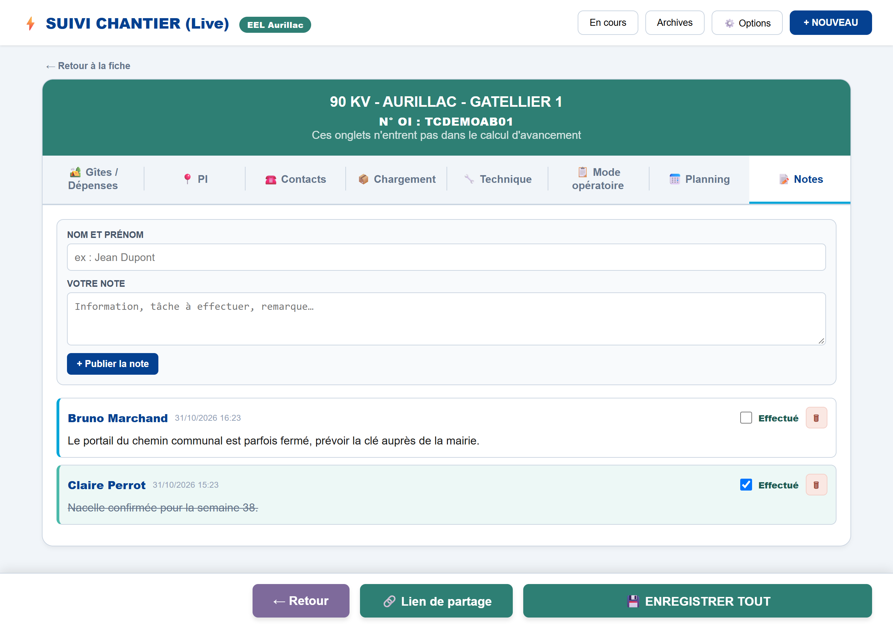
Votre nom est mémorisé sur l'appareil : vous ne le saisissez qu'une fois. La case Effectué barre la note sans la supprimer.
Le bouton 📑 Préparation de travail, en bas de l'écran Prépa, ouvre le document complet : les 21 pages du classeur Excel, les unes sous les autres, que l'on remplit directement et que l'on imprime à la fin.
La première page est une couverture à la charte RTE, remplie toute seule à partir du chantier : liaison et numéro, code liaison et numéro de schéma unifilaire, semaines de travaux, nature des travaux, période, NIP, équipe et préparateur. Seuls le retrait (numéro d'OI et créneau) et la photo se saisissent ici ; la photo est rattachée au chantier et visible par tous.
La photo peut venir directement de votre téléphone : l'application accepte jusqu'à 20 Mo et réduit l'image elle-même à 1800 pixels de côté, en JPEG. Une photo de onze méga-octets se range ainsi en moins d'un, sans rien perdre de ce qui se voit sur une couverture, et les photos prises de travers sont redressées d'après leur orientation.
Elle s'imprime à bord perdu, sans marge, et se décoche comme n'importe quelle autre page si vous n'en voulez pas.
Au bas de la page Annexes, le bloc Documents annexés accueille tout ce que vous voulez joindre, rangé par catégorie : calculs, types de chaînes, plan de prévention, arrêté de circulation, photos… Nommez la catégorie dans le champ du haut et choisissez des fichiers, images ou PDF : elle est créée.
Chaque catégorie devient une page de la préparation, placée avant le retour d'expérience et le compte rendu, qui closent le dossier. Elle figure au sommaire sous son nom, avec son numéro d'annexe et son numéro de feuille : après l'annexe 6 viennent les pièces jointes, puis le REX et le compte rendu, qui prennent les numéros suivants. La liste Annexes numérotées de la page Annexes suit la même numérotation, et ce qui y était coché le reste quand une pièce s'ajoute. Chaque page se coche et se décoche comme n'importe quelle autre. Un PDF de plusieurs pages donne autant de feuilles.
Une catégorie se complète autant de fois qu'on veut : son bouton + Fichiers y ajoute de nouveaux documents sans rien retaper. Le champ du haut propose d'ailleurs les noms déjà créés, pour les retrouver sans faute de frappe. La liste sous chaque catégorie permet d'en retirer un fichier, de la renommer, ou de tout retirer.
Beaucoup de schémas unifilaires sont des plans tramés : le PDF ne contient que des traits, aucun texte, et il n'y a donc rien à y lire. L'application le dit clairement au lieu de laisser croire à un échec, et se rabat sur le nom du fichier, qui est normalisé chez RTE.
De T-TC-CLERAL71PLAUD-LASCHU-GDP_DES_CASSEAUX-L527007-C.pdf elle tire le
numéro de schéma (L527007), l'indice (C) et, par le code liaison reconnu au
référentiel, la tension et le nom de la ligne. Restent à saisir la longueur, la
plage de pylônes et les croisements, que seul le plan porte.
Même principe pour une NIP : NI_25-45474_1_24042025.pdf donne le numéro
et l'indice si le texte du document ne les a pas livrés.
Deux pages accueillent un panier : Liste de matériel chantier lignes et Matériel ligne. Sur l'une ou l'autre, collez le lien de partage d'un panier Invent’RTE puis cliquez sur Importer le panier : l'application lit le panier dans l'inventaire et en dresse la liste imprimable, regroupée par ouvrage comme dans Invent’RTE, avec la famille, la zone de rangement et la quantité de chaque article.
Les deux pages ont chacune leur panier : vous pouvez porter l'outillage sur l'une et le matériel de chaîne sur l'autre, ou le même panier sur les deux. Importer sur une page ne touche pas à la liste de l'autre.
La liste est recopiée dans le chantier : elle s'imprime et se relit sans connexion à l'inventaire, et ses lignes restent modifiables ici. Relancer l'import la remplace par l'état courant du panier.
…/Inventaire-RTE/?equipe=EL%20Feytiat&panier=1792677398082.
À côté du bouton d’import, 📦 Ouvrir Invent’RTE ouvre
l’inventaire dans un nouvel onglet : vous y prenez le lien du panier et revenez le
coller ici, sans quitter la préparation. Ni le champ ni les boutons ne s’impriment.
La page MALT / CC et gestion des aléas reprend le fichier de détermination des sections de GEMCC. Le code de la LIT y arrive déjà rempli, repris du chantier ; cliquez sur ↻ Calculer la section et la page donne l'Icc triphasé, l'Icc monophasé, le temps d'élimination retenu, et les sections de MALT / CC en cuivre et en alu.
Les deux cases de code — celle de la ligne et celle de la ligne qui croise — se déroulent aussi. Les lignes de votre équipe s'y trouvent d'emblée ; dès que vous ouvrez la case, les 7 700 liaisons du fichier s'y ajoutent, et taper quelques lettres filtre la liste. La saisie libre reste possible.
Deux cas particuliers du fichier sont pris en compte :
Si la liaison n'est pas au fichier, l'application le dit : le calcul est alors à faire par GEMCC.
Le schéma de limite poste / ligne du classeur figure sous le résultat : il rappelle où s'arrête le chantier ligne. Au-delà de cette limite, c'est le fichier poste de GEMCC qui s'applique, et ce calcul-ci ne vaut plus.
La page Schémas du document opératoire reprend les schémas de la note d'application RTE Protection contre le risque électrique — Lignes aériennes, de sa légende aux trois tableaux de solutions. Ils ne sont plus livrés en planches entières : chaque solution a son propre bloc, sous le nom qu'on lui donne sur le chantier — 1A, 2A, 3A, 4A pour la pose sur un support (§3.4.1), 1B, 2B, 3B pour les travaux au sol sur un conducteur (§3.4.2), 1C, 2C, 5C, 6C, 7C, 8C et 10C pour la pleine portée avec une PEMP (§3.4.3).
Chaque bloc dit, avant de montrer le dessin, les deux choses qui décident : la ligne RPE — la solution tient-elle s'il y a risque de réalimentation par un ouvrage voisin — et la ligne RGT — faut-il une continuité électrique avec le réseau de terre d'un poste, c'est-à-dire un câble de garde. La ligne Protection dit contre quoi elle protège : le retour intempestif triphasé seul, ou triphasé et monophasé. La note du bas reprend les compléments du document : ce qu'il faut formaliser dans la préparation, ce qui doit passer en réunion de planning et dans la NIP, et le rappel que les mises à la terre se dimensionnent à l'Icc.
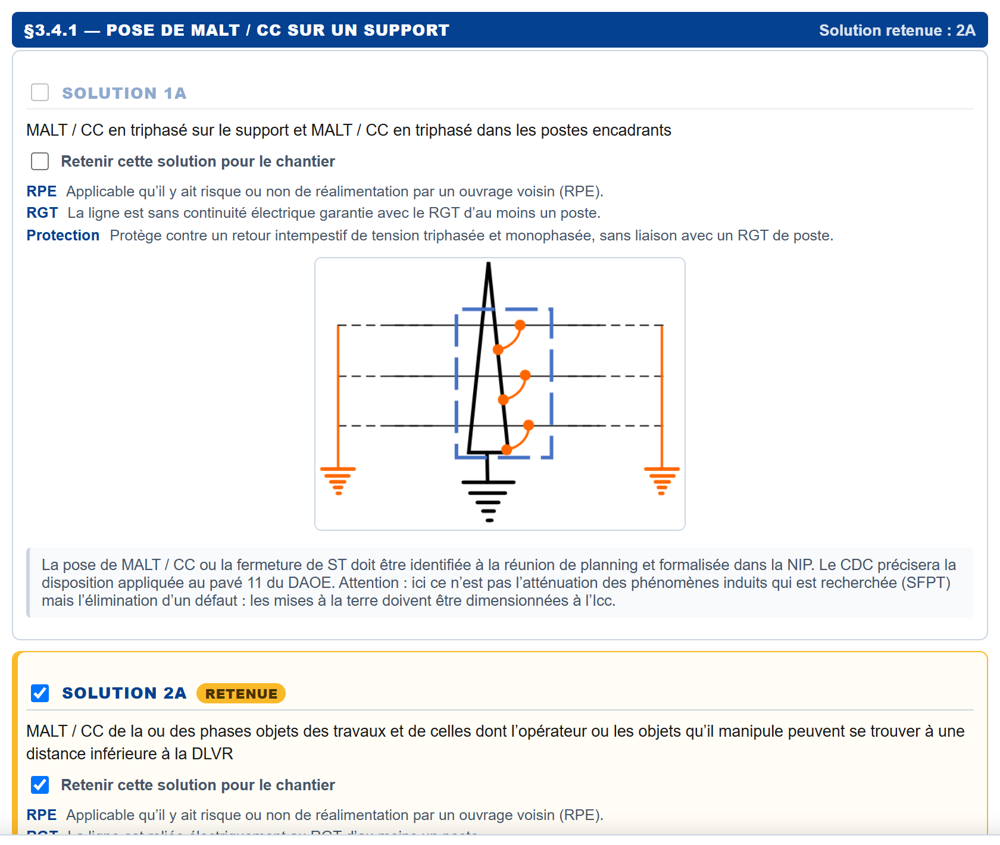
Dans chacune des trois familles, cochez Retenir cette solution pour le chantier sur celle que vous appliquez. Elle se marque en jaune, porte l'étiquette retenue, le bandeau de la famille affiche son code, et elle part à l'impression même si vous n'aviez rien coché d'autre. Une seule solution par famille : en cocher une autre libère la première. Décochez pour revenir à aucune solution retenue.
Au départ, seule la légende sort à l'impression : les quatorze schémas sont là pour être consultés à l'écran, pas pour remplir le classeur. La case à gauche du titre de chaque solution décide de ce qui s'imprime, et deux boutons en tête de page affichent ou masquent tout d'un coup, avec un compteur qui dit combien de schémas partiront. Le choix de la solution, lui, ne s'imprime pas sous forme de case à cocher : sur le papier il ne reste que l'étiquette retenue et le code dans le bandeau de la famille.
Ces choix — la solution retenue et les schémas affichés — sont gardés avec le chantier : vous les retrouvez tels quels en rouvrant la préparation, et ce sont eux qui sortent à l'impression. Il en va de même des fiches SUE cochées.
La page Liste de matériel chantier lignes reprend les onze familles du classeur, de la tension au petit matériel. Un chantier n'en emporte que deux ou trois : décochez les autres. La famille se replie sur son titre, son tableau disparaît, et elle ne sort pas à l'impression. Recochez-la pour la retrouver avec tout ce qui y était saisi — rien n'est perdu, seulement rangé.
Deux boutons en tête de page affichent ou masquent les onze d'un coup, et un compteur rappelle combien sortiront à l'impression. Comme pour une page masquée, une famille repliée ne compte pas dans le taux de remplissage.
Le pavé 17 du classeur n'est qu'un quadrillage à remplir au crayon. Ici il se dessine. Trois boutons posent les objets : + Pylône, + Poste et + Mise à la terre. Glissez un objet pour le déplacer, cliquez-le pour le régler — son numéro, sa taille, sa couleur, et Relier à pour tirer la ligne vers un autre objet.
La ligne se trace en trait épais, légèrement arqué comme une portée, et sa flèche va toujours vers le bas : un câble pend. Sous le dessin, Lignes tracées en donne la liste : pour chacune, un curseur règle son épaisseur et une pastille sa couleur. La courbure, elle, ne se règle pas — c'est la flèche d'une portée, elle est juste comme elle est.
Les couleurs proposées sont celles de la charte RTE — bleu marine, cyan, vert, jaune, terracotta, mauve — plus le noir, et un sélecteur libre à côté si vous en voulez une autre.
Le quadrillage reste imprimé sous le dessin : ce qui n'a pas été placé à l'écran se finit à la main sur le chantier. Les boutons et les réglages, eux, ne s'impriment pas.
Le pavé 18, gestion des mises à la terre, était lui aussi une image du classeur, floue à l'impression. C'est maintenant un vrai tableau : dix lignes, l'en-tête à quatre niveaux du classeur — 2ème étape de consignation et déconsignation correspondante, MALT posées et enlevées, pose et dépose du fanion — net à l'impression et remplissable à l'écran comme au stylo.
Juste après les schémas du document opératoire vient la page Situations d’urgence environnementale, qui reprend la fiche générique de traitement des SUE de RTE, version d’octobre 2019. Les huit fiches y sont au complet : incendie sous une ligne aérienne, incendie dans un poste, déversement d’huile ou de matières dangereuses, fuite d’huile d’une liaison souterraine, incendie ou déversement lors du transport ou d’un chantier neuf — à terre et offshore —, activités offshore, et émanation de légionnelles des tours aéro-réfrigérantes.
Chacune garde la structure de l’original : les actions préventives, celles qui s’ajoutent selon les facteurs aggravants identifiés — proximité de tiers, site industriel classé, zone environnementale protégée, présence d’eau, de PCB, de SF6 —, puis les actions curatives immédiates, supplémentaires et complémentaires, avec en face de chacune qui la porte : le chargé d’exploitation, l’ingénieur d’astreinte, le groupement de postes, le GMR, le prestataire. Les sigles sont rappelés en bas de page.
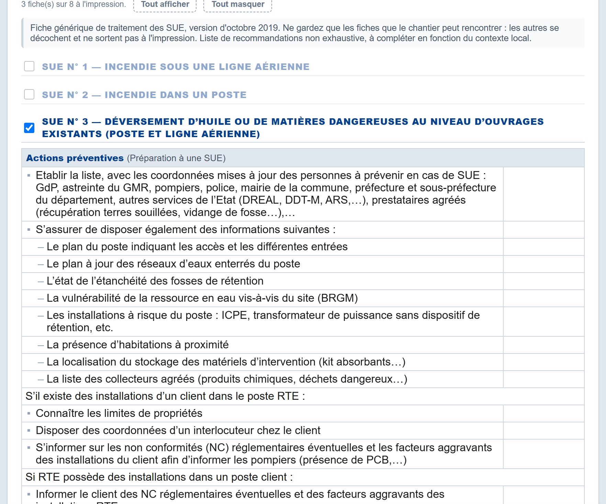
Une préparation n’est concernée que par une ou deux fiches. Décochez les autres : elles restent là, repliées, et ne sortent pas à l’impression. Les deux boutons Tout afficher et Tout masquer font le tri d’un coup, et le compteur dit combien de fiches partiront au papier. Les trois fiches qu’une équipe ligne ne rencontre pas — les deux offshore et les tours aéro-réfrigérantes — sont décochées d’avance ; les cinq autres sont gardées.
La page elle-même n’est pas affichée par défaut : cochez-la dans le sommaire quand le chantier le demande. Le rappel qui l’ouvre ne s’imprime pas. Comme le dit la fiche d’origine, la liste n’est pas exhaustive : elle se complète en fonction du contexte local.
La page Synoptique de déroulage montre le canton vu de profil, comme la planche que le bureau d'études dessine sous Visio : la freineuse à un bout, le treuil à l'autre, entre les deux les supports avec leur numéro, leur nature et le diamètre de leur poulie, et sous la portée ce qu'elle survole. Elle n'est pas affichée par défaut : cochez-la dans le sommaire quand le chantier est un déroulage. Elle s'imprime en paysage, comme le document d'origine.
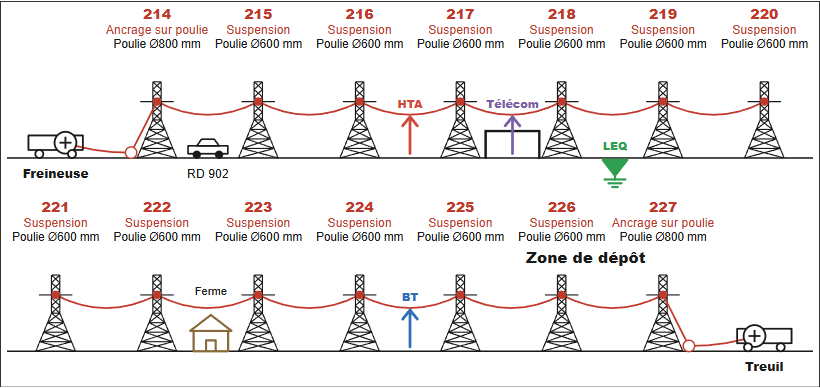
Le rappel qui ouvre la page ne s'imprime pas : à sa place vient le champ Note, où l'on écrit ce que le plan ne dit pas — consignes de déroulage, points de vigilance, accès, horaires de neutralisation d'une route.
Renseignez d'abord le canton — par exemple 214-227 — puis
Monter le canton : la freineuse, les quatorze supports numérotés et le treuil se
posent d'eux-mêmes, répartis sur deux bandes, les deux extrémités en ancrage sur poulie
Ø800 et le reste en suspension sur Ø600. Il ne reste qu'à corriger ce qui diffère et à
ajouter les franchissements. Les champs Conducteur ancien et nouveau rappellent
en tête ce que l'on dépose et ce que l'on déroule.
Les boutons posent le reste : Pylône, Freineuse, Treuil, Route, HTA, Télécom, BT, Maison, LEQ et un texte libre. Chacun se pose au milieu du plus grand vide de sa bande, jamais sur le dessin d'à côté. Glissez-le pour le mettre à sa place — d'un bout à l'autre, ou d'une bande à l'autre, le sol n'a jamais à être visé. Cliquez-le pour régler son numéro, sa nature, sa poulie, sa taille et sa couleur, et le déplacer au pas avec ◀ et ▶ quand le doigt vise mal. Chaque libellé porte un liséré blanc : il se lit même posé par-dessus un treillis ou un câble. Et un pylône ne grandit que jusqu'au bandeau de libellés de sa bande — au-delà il masquerait son propre numéro.
Une ligne franchie — HTA, télécom, BT — se dessine d'une flèche seule, et ne porte son portique de protection que si la case du même nom est cochée. La LEQ se place sous la ligne de sol, son libellé au-dessus du trait. Le texte libre, lui, se pose où l'on veut sur le plan : il se glisse en hauteur comme en largeur, et sa taille est celle de son écriture.
Deux boutons Portées de la bande — →← et ←→ — resserrent ou écartent d'un coup tout ce que porte la bande du support sélectionné, à partir de son milieu. C'est ce qu'il faut quand plusieurs franchissements doivent tenir sous une même portée : on ouvre la portée au lieu d'empiler les symboles.
Le câble se trace tout seul d'un pylône au suivant, dans l'ordre où ils sont posés sur la bande, avec la flèche d'une portée. Sa couleur, son épaisseur et sa flèche se règlent en tête de page. Pour couper le câble — fin de canton, portée non déroulée — décochez Câble vers le suivant sur le pylône concerné.
Une machine ne fait pas partie de la ligne : elle s'y raccorde. Posée entre deux pylônes, la freineuse ou le treuil tire son brin vers le premier des deux, remonte en tête de ce pylône, et la ligne continue vers le suivant en lui passant au-dessus — elle ne repasse pas par la machine. En tête de bande, le brin va au premier pylône, comme avant.
Un support peut porter une poulie de pied : cochez-la sur le pylône, et le câble qui vient de la machine n'arrive plus en tête mais au sol, sur une poulie de renvoi au pied du fût, d'où il remonte à la poulie du haut. Le côté se déduit tout seul : celui où se tient la machine qui s'y raccorde, à défaut le bout de bande le plus proche. Les autres portées du même pylône restent accrochées en tête.
Le nombre de bandes se règle de une à quatre : un long canton se lit mieux sur deux ou trois lignes que sur une seule écrasée. Comme pour le schéma de l'ouvrage, les boutons et les réglages ne s'impriment pas — seul le dessin sort.
Juste après le mode opératoire, la page Permis de feu reprend le modèle de l'annexe n° 1 de la note RTE NA-SST-DSSQVT-12-00053, « Le permis de feu à RTE ». Elle s'imprime sur deux feuilles, comme l'original : le permis lui-même, puis les consignes de sécurité impératives à cocher — avant, pendant et après le travail. Elle n'est pas affichée par défaut : cochez-la dans le sommaire quand le chantier comporte un point chaud.
Le permis de feu est obligatoire dans deux cas : les travaux de soudage oxyacéthylénique confiés à une entreprise extérieure (arrêté du 19 mars 1993, pris en application de l'article R237-8 du code du travail), et les interventions sur un site classé ICPE dont l'arrêté préfectoral l'impose. Hors de ces cas, les risques liés aux points chauds s'intègrent à la préparation de travail. Le permis se joint à la préparation ; il est archivé à la fin des travaux.
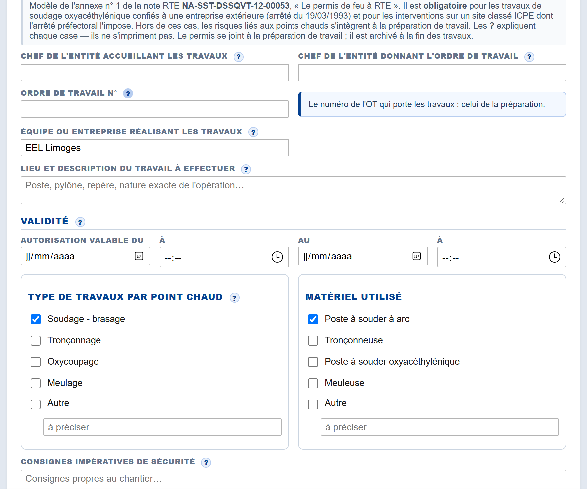
La page suit le formulaire ligne pour ligne : les deux chefs d'entité, l'ordre de travail, l'équipe ou l'entreprise qui exécute, le lieu et la description, la validité, le type de travaux par point chaud et le matériel utilisé, les consignes, les risques particuliers, les moyens de protection, les documents associés, les moyens d'alerte et les numéros d'urgence, puis les trois signataires — chargé de travaux, agent veillant à la sécurité de l'opération, chef de l'entité qui accueille les travaux ou de l'entité donneuse d'ordre. Les visas se signent au doigt ou à la souris, comme partout ailleurs dans la préparation.
Treize petits ? bleus accompagnent les cases. Cliquez-en un : il déplie sous le champ ce qu'il faut y porter — qui délivre le permis selon que le site est exploité par RTE, par un tiers ou hors exploitation ; que le permis est à renouveler dès que l'exécutant, le lieu ou l'opération change ; que le plan de prévention vaut pour les travaux régis par le décret de 1992 quand ceux du décret de 1994 passent par le plan général de coordination, le PPSPS et les modes opératoires ; et le point le plus souvent oublié, la surveillance tenue au moins deux heures après l'arrêt des travaux contre les feux couvants. Ces bulles sont là pour aider à remplir : elles ne s'impriment pas.
Quand un chantier abîme un champ, une clôture ou un chemin, le propriétaire est indemnisé et signe une quittance. La page Formulaire de dégât instantané, placée après la méthode PAPOTO, reprend le formulaire RTE « Indemnité pour dégâts instantanés » : le soussigné et son adresse, la somme acceptée, la nature des travaux et qui les a faits, la ligne, la tension et la portée ou le pylône, le tableau des dégâts, la quittance, le lieu, la date et les deux signatures.
Un chantier peut abîmer plusieurs parcelles, et chaque propriétaire signe la sienne : le bouton + Ajouter un formulaire en crée un second, un troisième, jusqu'à douze. Chacun part sur sa propre feuille à l'impression. Supprimer celui-ci retire un formulaire et fait remonter les suivants.
La page reprend la mise en page du modèle papier : le logo RTE en tête, le titre centré, et les cases glissées au fil de la phrase sur leurs pointillés, comme sur le formulaire d'origine — avec la charte graphique de l'application.
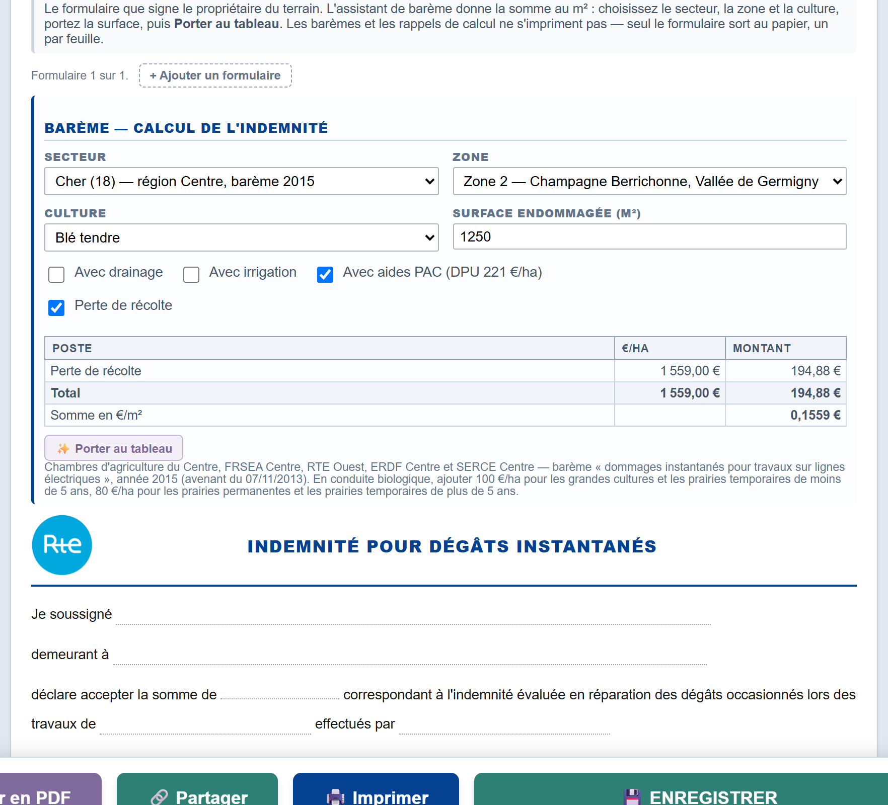
Au-dessus du formulaire, un assistant de barème — qui ne s'imprime pas — donne le montant sans calculette. Choisissez le secteur, la zone et la culture, portez la surface endommagée en m², cochez les postes à indemniser : le détail s'affiche en euros par hectare et en montant, avec la somme en €/m². Le bouton Porter au tableau écrit la ligne dans le formulaire, avec son libellé complet — culture, zone, postes retenus et barème d'origine — pour que le propriétaire voie d'où vient le chiffre.
Trois jeux de barèmes sont chargés :
La référence du barème et ses réserves s'affichent sous le calcul : conduite biologique, cultures spéciales absentes du barème, indemnités forfaitaires de tranchée et d'ornières. Le barème n'est qu'une aide au chiffrage : les trois colonnes du tableau restent libres, et une ligne peut toujours s'écrire à la main.
Le total du tableau remonte de lui-même dans la phrase « déclare accepter la somme de », et chaque ligne affiche son montant dès que la surface et la somme au m² sont portées. Le pied de page — l'adresse de l'agence — est modifiable : videz la case pour revenir au modèle.
Le bouton 📄 Enregistrer ce formulaire en PDF produit un fichier qui ne contient que ce formulaire-ci : le logo RTE, le texte de la quittance avec vos cases remplies, le tableau des dégâts et son total, les deux signatures — tracées à l'écran, elles y sont — la note du relevé d'identité bancaire et le pied de l'agence. L'assistant de barème, les boutons et le reste de la préparation n'y figurent pas. Le fichier s'enregistre sur votre ordinateur sous un nom qui dit la ligne, le bénéficiaire et la date, prêt à être classé ou joint à un message. Si le tableau est long, il passe sur une deuxième feuille en reprenant son en-tête, et chaque feuille porte son numéro.
Au-dessus de chaque formulaire, une ligne Courriel du bénéficiaire et un bouton ✉ Envoyer par mail. Portez l'adresse, cliquez : l'application écrit le message entier — destinataire, objet, texte, et le formulaire PDF en pièce jointe — et le remet à votre messagerie. L'objet porte la ligne et la portée ; le corps reprend le bénéficiaire et son adresse, le détail chiffré ligne par ligne, le montant total, l'engagement de RTE à payer par chèque, la demande de retour signé en deux exemplaires avec la mention « Lu et approuvé » et le relevé d'identité bancaire, puis le nom du représentant RTE et le pied de l'agence. Ni l'adresse ni les boutons ne s'impriment.
Sur ordinateur, le message arrive sous la forme d'un fichier .eml
que le navigateur télécharge : ouvrez-le. Outlook l'ouvre comme un message prêt à
partir, destinataire, texte et pièce jointe en place — il ne reste qu'à cliquer
Envoyer. Une autre messagerie l'ouvrira plutôt en lecture : utilisez alors
Transférer, la pièce jointe suit.
Sur téléphone ou tablette, aucun logiciel n'ouvre un fichier .eml :
le bouton passe par le partage de l'appareil. Le PDF part réellement attaché, le
texte est déjà écrit, et c'est dans l'application de messagerie que se choisit le
destinataire.
.eml ne vous sert à rien : le bouton ✉ Webmail ouvre le message
seul, sans pièce jointe, et vous y joignez le PDF à la main après l'avoir obtenu par
📄 Enregistrer ce formulaire en PDF. C'est l'ancien comportement, gardé pour
ce cas-là.
La deuxième page est un sommaire à la charte RTE : chaque page affichée y figure avec le numéro de la feuille où elle commence. Les sections principales sont en bleu marine, les pages qui s'y rattachent en retrait.
Les numéros sont calculés sur la mise en page réelle, et non estimés : une page réduite occupe une feuille, une planche ou une NIP en occupe autant qu'il lui en faut, et le sommaire en tient compte. Il se met à jour dès que vous cochez ou décochez une page, et se décoche lui-même comme les autres.
Le sommaire liste les 27 pages avec, pour chacune, une case d'affichage et son taux de remplissage. Quinze pages sont affichées d'emblée ; les douze autres — permis de feu, mode opératoire nacelle, constat d'adéquation, situations d'urgence environnementale, synoptique de déroulage, planification, liste d'outillage, métrologie, manchonnage, PAPOTO, formulaire de dégât instantané, matériel ligne — restent masquées jusqu'à ce que vous les cochiez, exactement comme les feuilles masquées du classeur.
Trois boutons en bas du sommaire permettent de tout afficher, tout masquer, ou revenir à la sélection par défaut. Un clic sur un titre fait défiler jusqu'à la page.
Le constat d'adéquation et de conservation reprend la feuille du classeur telle quelle : c'est un document qui se signe à deux. Cochez la page, imprimez-la et remplissez-la sur place avec l'entreprise de location. Ce que l'application connaît déjà y est repris — la date de début du chantier, la nature des travaux, l'engin, son immatriculation et le loueur saisis dans Moyens humains + véhicules, et le chargé de travaux désigné sur la fiche — le reste reste vierge, assez large pour être écrit à la main. Le bas de la feuille porte les deux colonnes du classeur, « Pour le chargé de travaux » et « Pour le loueur », avec un cadre de signature pour chacune.
La préparation s'ouvre vide. Les tableaux qui ont un contenu type — habilitations des moyens humains, tâches du mode opératoire, jours de la planification — affichent un bouton ✨ Pré-remplir qui insère le modèle du classeur. Rien n'est imposé : vous partez du modèle quand il vous convient, vous saisissez ligne à ligne sinon.
Plusieurs pages arrivent en revanche déjà garnies, parce que le classeur en fait autant et qu'une feuille de lignes tracées vaut mieux qu'une feuille vide. La fiche de secours porte l'encadrement et les groupements enregistrés pour l'équipe (voir plus bas). MALT / CC et gestion des aléas s'ouvre avec onze lignes de MALT / CC et quatre lignes d'aléas ; mode opératoire (suite) avec douze lignes ; planification avec les cinq jours de la semaine ; métrologie avec quatre lignes par appareil ; procès-verbal de manchonnage avec dix relevés. Toutes ces lignes sont assez hautes pour être écrites au stylo sur le chantier, et se modifient, se suppriment, ou se complètent avec + Ligne.
Les informations déjà connues du chantier ne sont pas à ressaisir : le numéro de ligne, la tension et le nom de la ligne, les dates de début et de fin, les numéros d'OT et d'OI. Elles apparaissent sur fond gris, et se reportent d'une page à l'autre — vers le compte rendu, le REX, la planification, la liste d'outillage.
Les visas portent d'office la personne désignée sur la fiche : le chargé de travaux y figure comme préparateur et comme CDT, son suppléant comme suppléant CDT, et la même règle vaut pour la validation CDT du compte rendu. Il ne reste que la date et la signature à porter. Un autre nom se saisit par-dessus ; videz la case pour revenir à celui de la fiche.
Chaque case de signature — les cinq visas de la page des travaux, la validation du management, les deux validations du compte rendu et les deux colonnes du constat d'adéquation — porte un bouton ✎ Signer. Il ouvre un cadre où l'on signe au doigt, au stylet ou à la souris : sur tablette et sur téléphone, la signature se trace directement à l'écran.
Le même cadre propose Importer une image si vous avez déjà une signature scannée ou photographiée. Le fond blanc du papier est rendu transparent, pour que la signature se pose sur la case sans pavé clair autour, et l'image est ramenée à 700 pixels de large — une signature pèse alors une quinzaine de kilo-octets.
Une fois posée, la signature s'affiche dans sa case et s'imprime. Les boutons, eux, ne s'impriment pas : une case non signée sort comme un cadre vide, à signer au stylo. Survolez une signature pour la refaire ou la retirer.
La nature des travaux et les remarques importantes reprennent la description et les commentaires saisis sur la fiche du chantier. Corrigez-les ici si besoin ; videz la case pour revenir au texte d'origine.
Sur la page Annexes, le bouton 📎 Importer la NIP (PDF) enregistre la note d'information préalable avec le chantier et en relève les informations : numéro de NI et indice, numéro de retrait, dates de début et de fin de consignation, CDR, DR, nombre de SFPT, et un résumé des points importants (horaire à respecter, besoin de consignation, personnel de manœuvre, changements d'état, consignes particulières).
Les NIP de plusieurs pages sont lues entièrement. Tout reste modifiable : le relevé est une aide, votre saisie fait foi. Si une information n'a pas été trouvée, l'application vous dit laquelle plutôt que de laisser une case vide sans explication.
Le PDF est téléchargeable par tous ceux qui ouvrent le chantier, et le numéro de retrait avec son créneau remonte automatiquement sur la couverture.
Une NIP importée ajoute aussi une page NIP (document) au sommaire : elle s'imprime avec la préparation, une feuille par page du PDF, et se décoche comme n'importe quelle autre page. Sans NIP importée, cette page n'apparaît pas.
Juste en dessous, le bouton 📎 Importer le schéma (PDF) fonctionne de la même façon. En sont relevés le numéro de schéma et son indice, la liaison, la longueur, la plage de pylônes, la nature et la section des câbles, la date de mise à jour, et surtout le tableau des croisements de lignes — quelle portée franchit quel ouvrage.
Le schéma est souvent en A4 paysage et tient sur plusieurs planches : chacune s'imprime sur sa feuille, couchée pour occuper toute la page.
Sur la première page, le code liaison est rempli d'office à partir du numéro de
ligne du chantier — la ligne 7008 donne EGUZOL71PLAUD. Il se reporte sur la
fiche de secours et sur la page MALT / CC. Vous pouvez le corriger ; videz la case pour
revenir à la valeur du référentiel.
C'est ce code qui donne accès aux pylônes. Sur la fiche de secours, saisissez les numéros de support concernés puis cliquez sur 📍 Retrouver les coordonnées : l'application remplit la colonne X ; Y pour chacun. Un support hors de la liaison est signalé, avec la plage réellement couverte.
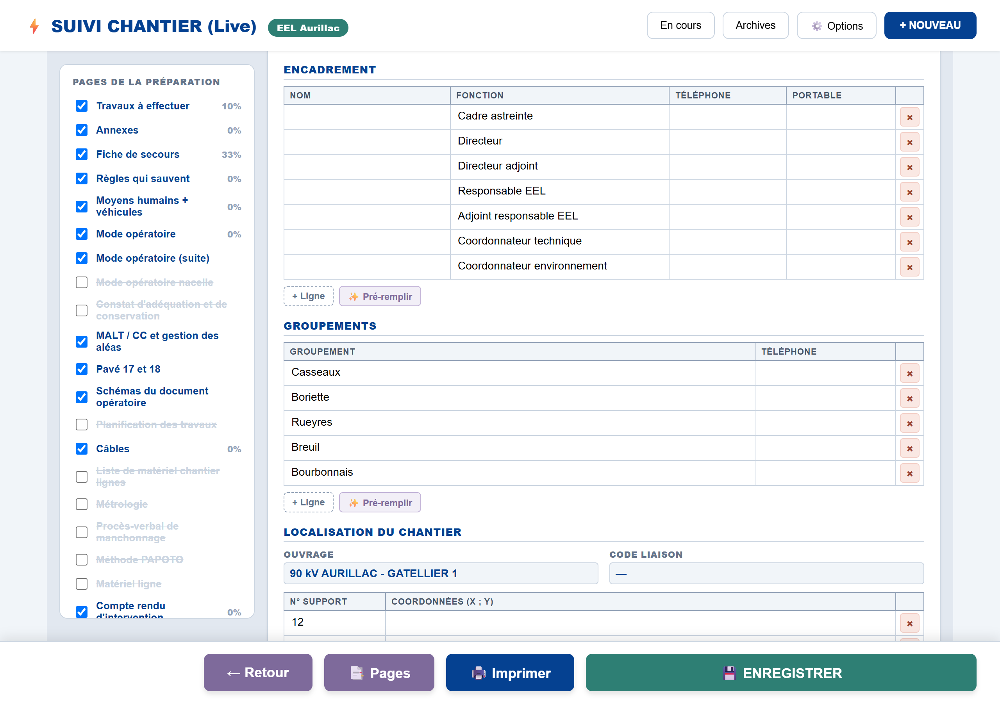
Les calculs du classeur sont conservés. Sur la page Câbles, choisir le type de câble renseigne le diamètre, ω, l'UPK et le fourreau ; la cote C se calcule (Ø / 2000 × √(paramètre × 9,81)) et la cote D découle du niveau de tension.
Le tableau des tâches se découpe : le bouton + Étape insère une séparation titrée, que l'on nomme librement (« Phase 2 — remplacement des chaînes »), pour grouper les tâches qui vont ensemble.
Chaque ligne porte deux boutons : + glisse une ligne vierge juste en dessous, et × la supprime. Une tâche oubliée se met donc à sa place sans qu'on ait à recopier tout ce qui suit. Ces deux boutons valent dans tous les tableaux de la préparation, et ne s'impriment pas.
Les colonnes Tâches à réaliser, Analyse de risques et Actions préventives reprennent les listes déroulantes du classeur : le chevron en haut à droite de la case ouvre les choix, et vous pouvez toujours écrire autre chose. La page MALT / CC fonctionne pareil pour la section et la solution.
Comme dans le classeur, Entrée valide la case et descend d'une ligne ; Maj + Entrée fait un retour à la ligne dans la case.
Une case de texte prend la hauteur de son texte : elle grandit quand le texte passe à la ligne, et redescend quand on efface. Si cette hauteur ne vous convient pas, tirez la poignée en bas à droite de la case : la hauteur que vous posez est alors gardée, et la saisie ne la défait plus.
Dès qu'un numéro de point d'arrêt est saisi, la ligne se surligne en jaune, à l'écran comme à l'impression. Effacez le numéro et le surlignage disparaît.
En face de ce point d'arrêt, la colonne Contrôle croisé dit qui contrôle : cochée, le contrôle est confié à une autre personne que le CDT ; laissée décochée, il s'agit d'un autocontrôle. La Directive le demande à l'exigence 3 — le type de contrôle doit être prévu en amont — et le vérificateur en juge la pertinence au titre de l'exigence 9.
La page Retour d'expérience reprend les rubriques du classeur — préparation, consignation, approvisionnement, documents, déroulement, méthode, moyens, outillages, tiers, accès — chacune correcte ou incorrecte avec son analyse, puis la sécurité et les enseignements à retenir.
Le même REX se saisit sous forme de questionnaire sur Kizeo, et la page porte le lien : forms.kizeo.com/forms, code entreprise RTE. Le lien s'ouvre dans un nouvel onglet, et l'adresse s'imprime en toutes lettres pour qui a le dossier sur papier. Les deux ne se remplacent pas : la page reste le REX du dossier, celui qui s'imprime, se signe et s'archive avec la préparation, comme l'exige la Directive.
Chaque page de la préparation porte, à côté de son titre, un petit ? bleu. Cliquez-le : il déplie sous le bandeau ce qu'on aurait dit à quelqu'un qui remplit la page pour la première fois — par où commencer, ce qui se reprend ailleurs plutôt que de se ressaisir, et le piège que tout le monde rencontre une fois.
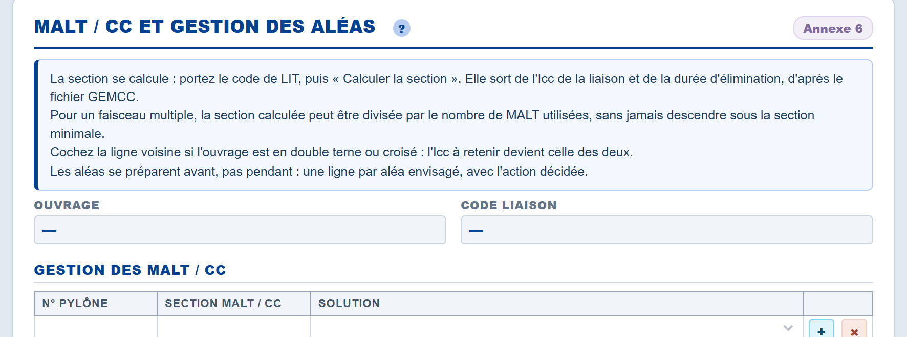
Quelques exemples : la page MALT / CC rappelle que la section se calcule depuis le code de LIT et qu'elle peut se diviser par le nombre de MALT d'un faisceau sans descendre sous la section minimale ; la page Câbles rappelle que tout calcul se fait sous CELESTE et qu'on porte ici des résultats, jamais une estimation ; la page PAPOTO rappelle la tolérance de 0,5 % et qu'au-delà on recommence la visée plutôt que de choisir le chiffre qui arrange ; la fiche de secours rappelle que l'adresse du point de rendez-vous des secours est la seule chose qui ne vient pas du carnet de l'équipe.
Un seul conseil s'ouvre à la fois, et rien de tout cela ne s'imprime : ni le ?, ni le texte. Le document qui sort au papier reste exactement celui du classeur. Le permis de feu, lui, porte en plus un ? par case.
Ce que vous faites dans la préparation coche automatiquement les tâches correspondantes du suivi, et fait donc avancer la jauge du chantier :
| Dans la préparation | Tâche validée sur la fiche |
|---|---|
| Une NIP importée | NIP, dans les documents techniques |
| Préparateur et CDT signés | Signature prépa |
| Approbation technique et points d'arrêts signée | Validation technique |
| Validation du management signée | Validation hiérarchiques |
Une ligne de signature compte comme signée de deux façons : le visa tracé dans le cadre, ou le nom et la date portés dans les cases. L'un suffit — on signe à la souris au bureau, on signe au doigt sur le chantier, et quelqu'un venu par le lien de partage peut faire les deux.
Le bouton 📄 Enregistrer en PDF ouvre la même fenêtre d'impression, mais nomme le fichier : Préparation de travail - 400 kV Clerac - Plaud - 2026-11-03, la ligne et le jour, au lieu du titre de l'application. Il ne reste qu'à choisir la destination Enregistrer au format PDF ; le navigateur s'en souvient ensuite. Le titre de la page est remis en place une fois l'impression terminée. Le bouton est là aussi pour qui reçoit la préparation par lien.
Le bouton 🖨️ Imprimer sort les pages affichées au format A4 portrait, une page par feuille, sans le sommaire ni les boutons. Une page un peu trop haute est réduite pour tenir sur sa feuille, au lieu de déborder de deux lignes sur la suivante. Une seule échappe à la règle : la liste de matériel chantier lignes, trop longue pour une feuille sans devenir illisible, qui se coupe donc proprement entre deux blocs. C'est une mise en page distincte de l'A3 de la fiche chantier : les deux ne se gênent pas.
Quand une page ne tient pas, elle n'est pas laissée au navigateur : l'application la découpe elle-même, feuille par feuille, et choisit la réduction qui lui fait remplir exactement ce nombre de feuilles. Pas de feuille de queue avec deux lignes dessus, pas de tableau coupé n'importe où, et chaque feuille — pas seulement la première — porte ses marges, reliure comprise.
Les pages faites de planches — règles qui sauvent, pièces jointes — ne se réduisent qu'un peu : leurs images doivent rester lisibles, quitte à prendre une feuille de plus. Les schémas du document opératoire, eux, se suivent par blocs : une solution n'est jamais coupée en deux feuilles.
Chaque feuille porte son numéro en bas à droite, sous la forme 7 / 33 : le rang de la feuille et le total du document. La couverture n'en porte pas — c'est la feuille 1, et le sommaire la compte comme telle.
Les deux pages de mode opératoire s'impriment en paysage, comme dans le classeur : leur tableau a six colonnes et respire bien mieux en travers. Le reste du document reste en portrait, dans la même impression — les marges de reliure et les numéros de feuille suivent de la même façon.
Les pages sortent avec une marge de 20 mm côté reliure, contre 11 à 12 mm sur les trois autres côtés : de quoi perforer et relier le document en livret sans entamer le texte. Sur la fiche A3, le décalage est pris du côté du pli, qui fait le dos du livret.
En recto verso, cette marge change de côté d'une feuille à l'autre : à gauche sur les feuilles impaires, à droite sur les paires, puisqu'une feuille retournée présente sa reliure de l'autre bord. Le numéro de page suit le même mouvement. Sans cela, la perforation mord dans le texte une feuille sur deux.
Si vous imprimez en simple face, décochez Recto verso en bas du volet des pages : la marge revient à gauche sur toutes les feuilles. Le choix est retenu sur l'appareil.
À l'impression, chaque case est remplacée par son texte complet : une saisie plus longue que la case passe à la ligne au lieu d'être coupée. Les cases restées vides s'impriment comme des encadrés à remplir à la main.
Au bas de la préparation, le bouton 🔗 Partager copie un lien que vous collez dans un mail. Celui qui l'ouvre voit la préparation complète — toutes les pages, les pièces jointes, les signatures déjà posées — choisit les pages qui l'intéressent et les imprime ou les édite en PDF exactement comme vous.
Il peut en outre faire trois choses, et seulement trois :
Les cases ouvertes sont teintées de jaune : tout ce qui n'est pas jaune est en lecture. Chaque case part dès qu'on en sort, et l'application le confirme.
Tout le reste est verrouillé : ni saisie, ni import, ni enregistrement. Et ce qu'il écrit part case par case, jamais la préparation entière : il ne peut pas écraser votre travail. Ce qu'il porte remonte dans votre session ouverte comme le font les notes, si bien qu'un enregistrement de votre part le conserve.
Le lien se termine par ?prepa= suivi de l'identifiant du chantier. Il est
distinct du lien ?partage= décrit plus bas, qui ouvre les onglets
logistiques ; les deux fonctionnent côte à côte.
Depuis l'espace Logistique, le bouton 🔗 Lien de partage copie une adresse à transmettre. Celui qui l'ouvre ne voit que cet espace : ni la liste des chantiers, ni la fiche, ni les options.
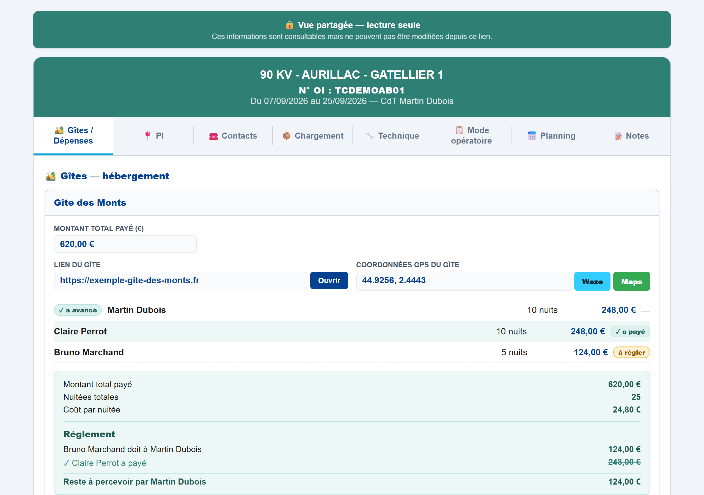
| Depuis le lien de partage | Possible ? |
|---|---|
| Consulter les huit onglets | Oui |
| Ouvrir Waze, Maps, un panier | Oui |
| Appeler, envoyer un SMS ou un courriel | Oui |
| Télécharger les reçus | Oui |
| Publier une note | Oui |
| Modifier quoi que ce soit d'autre | Non |
Le bouton 🖨️ Imprimer A3 produit une feuille A3 en paysage dont seule la moitié droite est occupée. Pliée en son centre, elle devient un porte-document avec la fiche chantier en couverture.
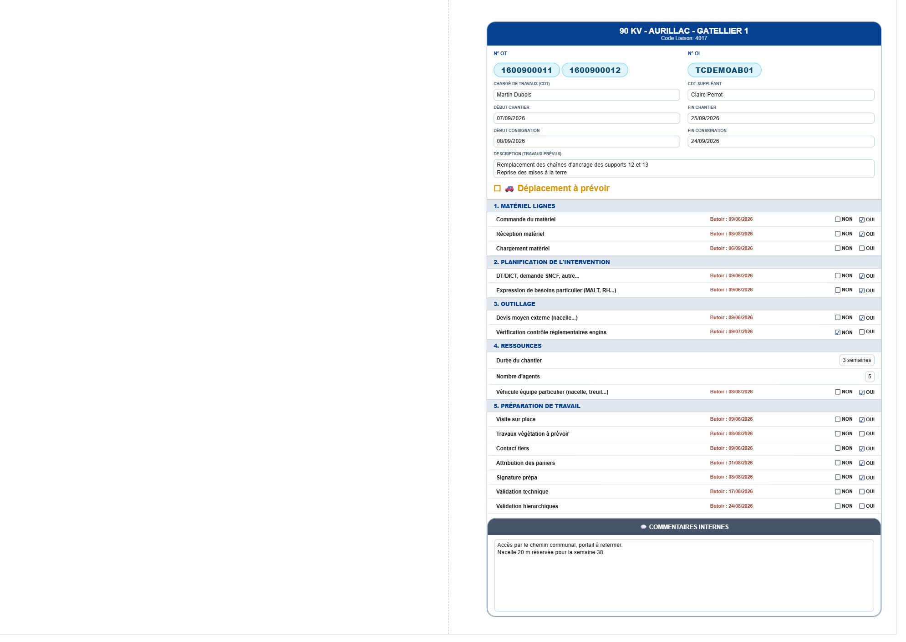
Les numéros d'OT et d'OI sont remontés juste sous l'en-tête et grossis : ce sont les références qu'on cherche en premier sur le papier.
La fiche imprimée est allégée par rapport à l'écran : la jauge, le champ Équipe et le rappel de la ligne disparaissent — l'en-tête les donne déjà. Les aplats de couleur sont retirés, le statut restant lisible par les cases cochées. Les dates butoir sont affichées pour toutes les tâches, y compris celles déjà traitées, ce qui donne le calendrier complet du chantier. Le bloc de commentaires est agrandi pour écrire à la main.
La mise en page s'adapte toute seule au contenu : plus la fiche est remplie, plus elle est réduite, mais elle occupe toujours exactement la hauteur et la largeur utiles.
Chaque équipe a sa liste de chantiers et son propre référentiel de lignes. Le bouton Basculer sur cette équipe change l'affichage ; l'équipe active porte un bandeau vert, et une pastille la rappelle en permanence dans la barre du haut. Le choix est mémorisé sur l'appareil.
Une équipe ne peut pas être supprimée tant que des chantiers y sont rattachés : ils disparaîtraient de toutes les listes. Réaffectez-les d'abord depuis leur fiche.
La liste affiche les lignes de l'équipe affichée, groupées par niveau de tension, avec un filtre par code ou par nom. Pour ajouter une ligne : domaine de tension, code, nom, et son code de LIT. Les doublons de code sont refusés.
Chaque ligne porte son code de LIT — Clerac – Plaud s'écrit CLERAL71PLAUD — affiché en pastille verte à côté de son nom. Il remplit tout seul le champ Code liaison de la préparation, celui de la fiche de secours, et il alimente la liste déroulante du calcul de section des MALT / CC.
Les lignes livrées avec l'application ont déjà le leur. Ce que vous saisissez ici prime dessus : c'est ainsi qu'on corrige un code ou qu'on en donne un à une ligne ajoutée à la main. Il est mis en majuscules à l'enregistrement, et l'application prévient — sans refuser — si la forme ne ressemble pas à un code de LIT. Videz la case pour revenir au code livré.
Le bouton ✎ Modifier ramène la ligne dans le formulaire du haut : tension, nom et code de LIT se corrigent, puis ✔ Enregistrer. La ligne en cours de modification est surlignée dans la liste, et Annuler rend la main sans rien changer.
Le code reste figé pendant la modification : c'est lui qui relie les chantiers à leur ligne, et le changer les détacherait tous. Pour changer un numéro, créez la nouvelle ligne et supprimez l'ancienne.
Supprimer une ligne utilisée par des chantiers est possible — un avertissement indique combien — et ces chantiers restent lisibles : la ligne y est signalée (ligne supprimée).
Le référentiel compte près de cent lignes : la liste est donc repliée à l'ouverture. Le bouton ▸ Afficher la déroule, ▾ Réduire la referme, et l'application retient votre choix sur l'appareil.
Le premier bloc de l'écran Options porte un bouton 📄 Ouvrir le guide (PDF) : c'est ce document. Il s'ouvre dans un nouvel onglet et s'enregistre comme n'importe quel PDF, pour être relu sans réseau.
En bas des options, le bloc Version donne la date et l'heure du fichier que votre navigateur fait tourner. Le navigateur garde l'application en mémoire pendant dix minutes : juste après une mise à jour, il peut encore servir l'ancienne, et une nouveauté annoncée semble alors absente. Le bouton ↻ Rechercher une mise à jour va chercher la dernière version sans attendre cette expiration.
Le bloc Fiche de secours tient, une fois pour toutes, les contacts que toute fiche reprend : l'encadrement (nom, fonction, téléphone, portable) et les groupements avec leur numéro. + Contact et + Groupement ajoutent une ligne, la croix en supprime une, et Ajouter les fonctions du classeur pose d'un coup les sept fonctions type — cadre astreinte, directeur, responsable EEL… — à compléter des noms et des numéros.
Chaque nouvelle fiche de secours part de ce carnet. Elle vit ensuite sa vie : corrigez-y un numéro, ajoutez un contact propre à ce chantier, le carnet de l'équipe n'y perd rien. À l'inverse, si le carnet a changé depuis, le bouton ↻ Reprendre le carnet de l'équipe au bas de la fiche la remet à jour.
Le bloc Opérateurs tient la liste des agents de l'équipe : nom, prénom, fonction, et pour chacun ses habilitations avec leur date de validité. Le bouton + Agent crée une fiche, + Habilitation ajoute une ligne. Le libellé propose les habilitations courantes (Permis CE, Permis C, H2 V, H1 V) sans vous y obliger.
Chaque habilitation porte son état, calculé à partir de la date : Valide, Dans n j à moins de soixante jours de l'échéance, ou Périmée. Les comptes remontent en tête de fiche, pour voir d'un coup d'œil qui est à renouveler.
Le bouton 🗃️ Archiver, sur la fiche, sort le chantier de la liste des travaux en cours sans rien perdre. On le retrouve dans l'onglet Archives.
Les archives s'accumulant, elles sont rangées dans des dossiers mensuels, du plus récent au plus ancien, d'après la date de début du chantier. Seul le mois le plus récent est ouvert : un clic sur un dossier le déplie. Les chantiers sans date de début sont regroupés à la fin.
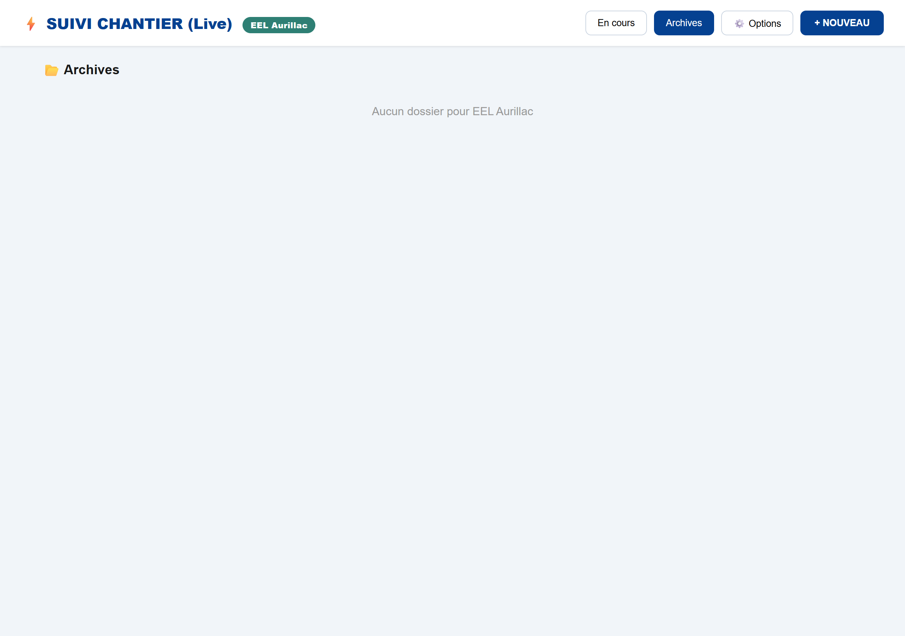
La suppression définitive n'est possible que depuis les archives, par la croix rouge en haut de la carte. Elle emporte aussi les reçus du chantier.
C'est la même application, à la même adresse, avec les mêmes données : rien à installer, rien à synchroniser. Seule la mise en page change, parce qu'un écran de 13 pouces et un écran de 6 pouces ne tiennent pas la même chose. Ce que vous enregistrez d'un côté apparaît de l'autre.
Entrée valide l'ajout d'une ligne
ou d'un gîte depuis les champs de saisie des options, et les flèches circulent dans
les pages de la préparation.Sur téléphone, ouvrez l'adresse dans le navigateur puis Ajouter à l'écran d'accueil : l'application prend son icône et s'ouvre en plein écran, sans barre d'adresse, comme une application installée. Sur ordinateur, le même geste existe dans la barre d'adresse de Chrome et d'Edge (Installer).
Un répertoire, écran par écran. Les boutons rouges suppriment ; ils demandent presque toujours confirmation.
| Bouton | Ce qu'il fait |
|---|---|
| ⚡ SUIVI CHANTIER (Live) | Le titre lui-même ramène à l'écran d'accueil. |
| Pastille verte | L'équipe active. Elle se change dans Options. |
| En cours | La liste des chantiers en cours de l'équipe. |
| Archives | Les chantiers archivés. |
| ⚙️ Options | Équipes, lignes, opérateurs, carnet de secours, version — et le guide. |
| + NOUVEAU | Ouvre une fiche de chantier vierge. |
| Bouton | Ce qu'il fait |
|---|---|
| Une ligne de la liste | Ouvre la fiche du chantier. |
| 🖨️ Imprimer A3 | Sort le porte-document A3 de tous les chantiers affichés. |
| Bouton | Ce qu'il fait |
|---|---|
| + (à côté des étiquettes) | Ajoute une étiquette : type de travaux, matériel. |
| + Tâche | Ajoute une tâche à la semaine affichée. |
| × sur une tâche | Supprime la tâche. |
| + Ajouter un pylône, + Ajouter une portée | Complètent les détails techniques. |
| 🗃️ Archiver | Range le chantier dans les archives. |
| 📄 Prépa | Ouvre l'écran de préparation. |
| 🏕️ Logistique | Ouvre Logistique & Terrain. |
| 📑 Préparation de travail | Ouvre le document de préparation, page par page. |
| 🖨️ Imprimer A3 | Sort la feuille A3 de ce chantier. |
| 🔗 Lien de partage | Copie un lien en lecture seule. |
| 💾 ENREGISTRER | Écrit dans la base. Rien n'est enregistré avant. |
| Bouton | Ce qu'il fait |
|---|---|
| Les huit onglets | Gîtes et dépenses, PI, Contacts, Chargement, Technique, Mode opératoire, Planning, Notes. |
| Ouvrir, Waze, Maps | Ouvrent le lien du gîte, ou lancent la navigation vers ses coordonnées. |
| + Personne, Reprendre les personnes des gîtes | Remplissent le tableau des dépenses communes. |
| 📄 (un reçu) | Télécharge le justificatif joint. |
| + Ajouter un point | Ajoute un point d'intérêt. |
| 📞 Appeler, 💬 SMS, ✉️ Mail | Lancent l'appel, le message ou le courriel depuis le contact. |
| + Contact, + Nouvelle catégorie | Complètent le carnet du chantier. |
| Ouvrir Invent'RTE, + Ajouter un panier, Ouvrir le panier | Le chargement : l'inventaire et les paniers partagés. |
| + Nouvelle tâche, + Sous-tâche, + Personne | Le mode opératoire, tâche par tâche. |
| + Publier la note | Ajoute une note datée, visible de tous. |
| 💾 ENREGISTRER TOUT | Écrit l'ensemble de la logistique. |
| Bouton | Ce qu'il fait |
|---|---|
| 📑 Pages | Sur téléphone seulement : ouvre et referme le sommaire des pages. |
| Tout afficher, Tout masquer, Défaut | En bas du sommaire : cochent ou décochent toutes les pages, ou reviennent au jeu de départ. |
| 📄 Enregistrer en PDF | Imprime vers « Enregistrer au format PDF », avec un nom de fichier qui porte la ligne et la date. |
| 🔗 Partager | Copie le lien de la préparation : celui qui le reçoit peut signer, porter son nom, sa date et une remarque. |
| 🖨️ Imprimer | Sort les pages cochées, une par feuille A4. |
| 💾 ENREGISTRER | Écrit la préparation dans la base. |
| Bouton | Ce qu'il fait |
|---|---|
| + Ligne, + Étape | Ajoutent une ligne, ou un titre d'étape, au tableau. |
| + et × en bout de ligne | Insèrent une ligne en dessous, ou suppriment celle-ci. |
| ✨ Pré-remplir | Verse le modèle du classeur dans le tableau, sans écraser ce qui s'y trouve. |
| ✎ Signer | Ouvre la fenêtre de signature : au doigt, à la souris, ou en important une image. Effacer recommence, Valider pose la signature. |
| ↻ Reprendre le carnet de l'équipe | Fiche de secours : reverse l'encadrement et les groupements enregistrés dans les options. |
| 📍 Retrouver les coordonnées | Cherche les coordonnées des pylônes de la liaison. |
| ↻ Calculer la section | MALT / CC : calcule la section depuis l'Icc et la durée d'élimination. |
| ↻ Importer le panier | Lit un panier Invent'RTE et en dresse la liste imprimable. |
| 📦 Ouvrir Invent’RTE | Ouvre l'inventaire dans un nouvel onglet, pour y copier le lien du panier. |
| 📄 Enregistrer ce formulaire en PDF | Dégâts instantanés : sort ce seul formulaire en PDF, signatures comprises. |
| ✉ Envoyer par mail | Dégâts instantanés : prépare le message au bénéficiaire avec le formulaire PDF en pièce jointe. |
| ✉ Webmail | Dégâts instantanés : ouvre le même message sans pièce jointe, pour Gmail ou Outlook en ligne. |
| Tout afficher / Tout masquer | Sur les schémas du document opératoire, les familles d'outillage et les fiches SUE : choisissent ce qui part à l'impression. |
| Retenir cette solution pour le chantier | Schémas du document opératoire : marque la solution de MALT / CC choisie et la fait sortir à l'impression. Une par famille. |
| + Pylône, + Poste, + Mise à la terre, 🗑 Tout effacer | Pavé 17 : le schéma de l'ouvrage. |
| ⚡ Monter le canton, + Pylône…, ◀ ▶, →← ←→, − + | Synoptique : monter le canton d'un coup, poser un élément, le décaler au pas, resserrer ou écarter les portées, changer le nombre de bandes. |
| ✨ Porter au tableau | Dégâts instantanés : écrit la ligne calculée par le barème dans le formulaire. |
| + Ajouter un formulaire, × Supprimer celui-ci | Dégâts instantanés : un formulaire par propriétaire. |
| ✉ Envoyer par mail | Dégâts instantanés : ouvre un message déjà écrit pour le propriétaire, avec le détail chiffré et le montant total. La pièce jointe reste à glisser à la main. |
| ? bleu | À côté du titre d'une page : déplie les conseils de remplissage. Dans le permis de feu, il y en a un par case. Ne s'imprime jamais. |
| ⬇ (un fichier), Retirer | Annexes : télécharger ou retirer une pièce jointe. |
| Bouton | Ce qu'il fait |
|---|---|
| 📄 Ouvrir le guide (PDF) | Ouvre ce guide dans un nouvel onglet. |
| + Nouvelle équipe, Basculer sur cette équipe, 🗑 Supprimer | Gèrent les équipes. Chaque équipe a ses chantiers et son référentiel de lignes. |
| + Ajouter / ✔ Enregistrer, Annuler | Ajoutent une ligne au référentiel, ou enregistrent celle qu'on modifie. |
| ✎ Modifier, 🗑 Supprimer | Sur une ligne du référentiel. Le code reste figé : c'est lui qui relie les chantiers à leur ligne. |
| ▸ Afficher / ▾ Réduire | Replient un bloc des options. |
| + Agent, + Habilitation, 🗑 Supprimer | Le carnet des opérateurs de l'équipe. |
| + Contact, + Groupement, Ajouter les fonctions du classeur | Le carnet de secours de l'équipe, repris ensuite par chaque fiche de secours. |
| ↻ Rechercher une mise à jour | Va chercher la dernière version sans attendre les dix minutes de cache du navigateur. |
| Bouton | Ce qu'il fait |
|---|---|
| Une ligne d'archive | Rouvre le chantier archivé, en lecture comme en écriture. |
| 🗑 Supprimer | Efface définitivement un chantier archivé. |
| ← Retour | Revient à l'écran précédent, partout dans l'application. |
| Vue partagée | Tout est en lecture seule, sauf les cases jaunes : signature, nom, date et remarque. |
Vérifiez la pastille d'équipe en haut à gauche. Chaque équipe a sa propre liste ; vous regardez peut-être celle de l'autre. Le changement se fait dans Options.
Votre navigateur affiche une copie en cache. Ctrl + F5 sur ordinateur, ou
ajoutez ?v=2 à la fin de l'adresse.
Les semaines se déduisent des dates de début et de fin du chantier. Renseignez-les sur la fiche.
C'est normal. La jauge ne mesure que les 25 tâches du suivi de préparation. Tout ce qui se trouve dans Logistique & Terrain en est volontairement exclu.
Le chantier doit être enregistré au préalable — le reçu s'y rattache par son identifiant. Vérifiez aussi qu'il s'agit bien d'un PDF de moins de trois mégaoctets.
Oui pour les notes et les reçus, écrits en base immédiatement. Pour le reste, le dernier qui enregistre écrase le travail de l'autre : mettez-vous d'accord avant de remplir la même fiche à deux.
Dans une base Firebase hébergée en Europe. Elles ne sont pas chiffrées et l'accès n'est pas protégé par mot de passe : n'y mettez rien qui ne puisse être lu par quelqu'un d'extérieur.